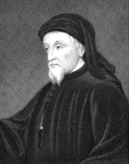

Geoffrey Chaucer’ın yaşamı hakkındaki detaylara erişmek kolay olmasa da, miras bıraktığı başyapıtı Canterbury Hikâyeleri (takriben 1390’lar) apaçık ortadadır. Edebi bir dil olarak o zamanlar -İngiltere’de bile- standart olan Fransızca ve Latinceye gerçek bir alternatif olarak İngilizcenin yerleşmesinde merkezi bir rol oynadı. İngilizcenin klasik dillere göre tabiatı gereği daha aşağı düzeyde olduğu anlayışını altüst eden Chaucer; Edmund Spenser, Sir Philip Sidney, Christopher Marlowe, William Shakespeare ve kendinden sonra gelen İngiliz edebiyatı devlerinin yolunu açtı.

Canterbury Hikâyeleri, Saint Thomas Becket’ın mabedini ziyaret etmek için Londra dolaylarından Canterbury’e grup olarak yolculuk eden hacıların anlattığı yirmi dört hikâyelik bir dizidir. Önsözde Chaucer’in aslında120 hikâyeyi bir araya getirmeye niyetlendiği belirtilir. Ancak eserin yarım kalıp kalmadığı veya Chaucer’in fikrini değiştirerek yirmi dört hikâyeyle yetinmeyi seçip seçmediği bilinmez.
Chaucer’in hacıları, toplumun farklı kesimlerinden gelen bir insan cümbüşüdür: Şövalye, Değirmenci, Af Satıcısı, Baş Rahibe, Aşüfte Kadın ve diğerleri. Hikâyeleri, öğütten alegoriye, hayat hikâyesinden şövalye romansına kadar edebi türlerin bir yelpazesini kapsar. Hikâyelerin konusu ise saray aşklarından dini ikiyüzlülüğe ve açık saçık mizah bölümlerine kadar geniş ölçüde değişir.
Canterbury Hikâyeleri’nin dili, “Beowulf”un Eskiçağ İngilizcesi ile günümüzün modern İngilizcesi arasında köprü olan Orta Dönem İngilizcesidir. Heceleme, telaffuz ve kelime sıralaması bakımından önemli ölçüde değişmiş olsa da, Chaucer’ın dili, günümüz okuyucuları için çoğunlukla anlaşılır düzeydedir. Örneğin, Aşüfte Kadın hikâyesi Kral Arthur İngiltere’sinde yaşadığı iddia edilen doğaüstü varlıkların betimlemesi ile başlar:
In th’olde dayes of the king Arthour, (O eski Kral Arthur günlerinde)
Of which that Britons speken great honour, (Britanyalıların büyük gururla bahsettiği zamanlarda)
Al was this land fulfild of fayerye (Bu toprakların tamamı perilerle doluydu)
Hikâyelerin iki tanesi hariç tamamı nazımdır. Chaucer, döneme hâkim olan Fransız nazım ölçülerini terk ederek kısa uzun vezinli beşlik hece ölçüsü kullanmayı tercih etti ve bu ölçü Chaucer’dan bu yana İngiliz şiir yaratımının en temel malzemesi oldu. Chaucer’ın bu önemli kararı, sonraki yüzyıllarda Shakespeare ve diğerleri için kısa uzun vezinli beşlik hece ölçüsünü mükemmel bir şekilde oyunlarda ve sonelerde kullanmak üzere zemin hazırladı.
EK BİLGİ:
1. 1340’ların sonlarında Kara Ölüm’ün İngiltere’yi kasıp kavurmasının ardından, Chaucer’ın ailesi salgından ölen akrabalarının bıraktığı servete kondu. Bu talih kuşu sayesinde Chaucer tüccar veya işadamı olmak yerine eğitim alabildi.